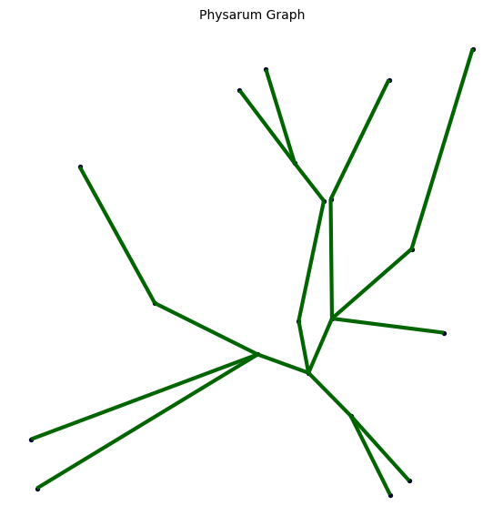

PhysarumGraph#
Overview#
PhysarumGraph implements an adaptive network algorithm inspired by the Physarum polycephalum slime mold, based on the research by Tero et al. (2010). The network evolves through a flow-based dynamics system that reinforces heavily-used edges and removes underused ones.
Mathematical Model#
The algorithm simulates a flow network where edges have conductivities that adapt based on usage:
Flow Calculation:
At each time step, pressures at nodes are computed by solving:
A · p = b
where:
A[i,i] = Σⱼ (Dᵢⱼ / Lᵢⱼ)(sum of adjacent edge conductances)A[i,j] = -(Dᵢⱼ / Lᵢⱼ)for adjacent edgesb[i] = 1/|sources|for source nodesb[i] = -1/|sinks|for sink nodesb[i] = 0otherwise
Conductivity Update:
D'ᵢⱼ = Dᵢⱼ + dt · (|Qᵢⱼ|^γ - Dᵢⱼ)
where:
Dᵢⱼis the current conductivityQᵢⱼis the flow through edge (i,j)γcontrols adaptation strengthdtis the time step
Class Definition#
class PhysarumGraph(BiologicalGraph):
"""
Physarum-like adaptive network (Tero et al. 2010) with:
- Multiple sources/sinks
- Automatic reconnection if fragmented
- Optional base graphs: 'delaunay' or 'complete'
"""
Constructor#
def __init__(self, setpoints, sources=None,
dt=0.1, gamma=1.5, eps=1e-3, steps=200,
base_graph="delaunay", reconnect=True)
Parameters:
setpoints:SetPointsThe set of points to connect. Must be a
SetPointsinstance.
sources:list of int, optional, default=NoneIndices of source nodes (flow originates here)
If None, defaults to
[0](first node)All nodes not in sources become sinks
Must contain at least one valid index
dt:float, optional, default=0.1Time step for numerical integration
Smaller values → more stable but slower convergence
Typical range: 0.05 - 0.2
gamma:float, optional, default=1.5Exponent controlling adaptation strength
γ < 1: Weak reinforcement, uniform networks
γ ≈ 1-2: Balanced (recommended)
γ > 2: Strong reinforcement, tree-like structures
eps:float, optional, default=1e-3Threshold for edge removal (minimum conductivity)
Edges with D < eps are pruned
Smaller values → denser final networks
steps:int, optional, default=200Number of evolution iterations
More steps → better convergence but slower
Typical range: 100 - 500
base_graph:str, optional, default=”delaunay”Initial graph structure
Options:
"delaunay": Delaunay triangulation (recommended for large n)
reconnect:bool, optional, default=TrueWhether to automatically reconnect fragmented components
Recommended to keep True for reliable results
Raises:
TypeError: Ifsetpointsis not aSetPointsinstanceValueError: Ifbase_graphis not ‘delaunay’ or ‘complete’ValueError: If no valid sources are provided
Attributes Created:
self.sources:list of int- Valid source node indicesself.sinks:list of int- All non-source nodesself.dt:float- Time stepself.gamma:float- Adaptation exponentself.eps:float- Pruning thresholdself.reconnect:bool- Reconnection flagself.graph.es["D"]: Edge conductivitiesself.graph.es["Q"]: Edge flows
Methods#
evolve()#
def evolve(self, steps=100)
Description:
Runs the Physarum dynamics for a specified number of time steps, updating edge conductivities based on flow.
Parameters:
steps:int, default=100Number of evolution iterations
Process:
For each step:
Solve for pressures at all nodes
Calculate flows through all edges
Update edge conductivities
Reconnect components (if enabled)
After all steps:
Remove edges with conductivity below
epsUpdate graph metrics
Notes:
Called automatically during initialization
Can be called again to continue evolution
Handles numerical instabilities gracefully
_update_step() (Internal)#
def _update_step(self)

Description:
Performs one iteration of the Physarum dynamics.
Algorithm:
Build conductance Laplacian matrix A
Set up source/sink vector b
Solve A·p = b for pressures p
Calculate flows Q = D·(∇p)/L
Update conductivities D’ = D + dt·(|Q|^γ - D)
Enforce minimum conductivity
Handles:
Linear algebra errors (fallback to least squares)
Zero-length edges (with numerical safeguards)
_reconnect_components() (Internal)#
def _reconnect_components(self)
Description:
Reconnects disconnected graph components by adding edges between nearest points.
Algorithm:
Find all connected components
Calculate component centroids
Find pair of closest centroids
Find closest point pair between those components
Add edge with initial conductivity 0.05
Notes:
Only called if
reconnect=TrueEnsures network remains connected during evolution
Critical for networks that may fragment during pruning
Edge Attributes#
After evolution, edges contain the following attributes:
"dist_eucl":float- Euclidean length of edge"D":float- Final conductivity (represents edge strength/importance)"Q":float- Final flow through edge
Usage Examples#
Example 1: Basic Usage#
import proximitygraphs as pg
# Create points
points = pg.SetPoints.uniform_square(n=100, seed=42)
# Create Physarum graph with default parameters
graph = pg.PhysarumGraph(
points,
sources=[0], # Flow from first node
steps=200 # 200 evolution steps
)
# Analyze result
print(f"Nodes: {graph.n}")
print(f"Edges: {graph.m}")
print(f"Components: {graph.cc}")
print(f"Mean degree: {graph.degrees.mean()}")
# Visualize
graph.draw(title=True, details=True)
Example 2: Multiple Sources#
# Multiple source nodes
points = pg.SetPoints.uniform_square(n=50, seed=123)
graph = pg.PhysarumGraph(
points,
sources=[0, 49], # Two sources at opposite ends
gamma=2.0, # Stronger adaptation
steps=300
)
# All other nodes become sinks
print(f"Sources: {graph.sources}")
print(f"Sinks: {graph.sinks}")
Example 3: Parameter Comparison#
from proximitygraphs import Experiment
exp = Experiment(
name="Physarum Parameter Study",
point_config={'method': 'uniform_square', 'params': {'n': 80}},
n_simulations=20,
seed=42
)
# Different gamma values
for gamma in [0.5, 1.0, 1.5, 2.0, 2.5]:
exp.add_graph_config(
pg.PhysarumGraph,
name=f'Physarum-γ{gamma}',
sources=[0],
gamma=gamma,
steps=200
)
results = exp.run()
exp.compare_metrics(['n_edges', 'mean_degree', 'mean_length'])
Example 4: Complete vs Delaunay Base#
points = pg.SetPoints.normal_dist(n=60, seed=999)
# Using Delaunay base (faster, recommended)
graph_delaunay = pg.PhysarumGraph(
points,
base_graph="delaunay",
sources=[0],
steps=150
)
# Using complete base (slower, exact)
graph_complete = pg.PhysarumGraph(
points,
base_graph="complete",
sources=[0],
steps=150
)
print(f"Delaunay base edges: {graph_delaunay.m}")
print(f"Complete base edges: {graph_complete.m}")
Example 5: Custom Evolution#
points = pg.SetPoints.uniform_square(n=40, seed=555)
# Create graph with minimal initial evolution
graph = pg.PhysarumGraph(
points,
sources=[0, 39],
steps=50, # Short initial evolution
gamma=1.5
)
print(f"After 50 steps: {graph.m} edges")
# Continue evolution
graph.evolve(steps=100)
print(f"After 150 total steps: {graph.m} edges")
# Even more evolution
graph.evolve(steps=150)
print(f"After 300 total steps: {graph.m} edges")
Performance Characteristics#
Time Complexity: O(steps × m × n)
Linear in number of steps
Each step requires solving n×n linear system
Depends on number of edges m
Space Complexity: O(n² + m)
n×n adjacency/conductance matrix
m edge attributes
Typical Running Times (approximate):
Points (n) |
Steps |
Base Graph |
Time |
|---|---|---|---|
50 |
200 |
Delaunay |
< 1s |
100 |
200 |
Delaunay |
2-3s |
200 |
200 |
Delaunay |
10-15s |
100 |
200 |
Complete |
15-20s |
Tips and Best Practices#
Source Selection
Choose sources at opposite ends for path-finding problems
Multiple sources create hub-like structures
Single source creates radial/tree structures
Parameter Tuning
Start with defaults (γ=1.5, dt=0.1, steps=200)
Increase γ for sparser networks
Decrease γ for denser networks
More steps if network hasn’t converged
Base Graph Choice
Use Delaunay for n > 50 (much faster)
Use complete only for small n or exact solutions
Delaunay gives very similar results in practice
Monitoring Convergence
# Track edge count over time graph = pg.PhysarumGraph(points, sources=[0], steps=50) edge_counts = [graph.m] for _ in range(5): graph.evolve(steps=50) edge_counts.append(graph.m) print(f"Convergence: {edge_counts}") # If stable, network has converged
Handling Large Networks
Use sparse matrix operations (future optimization)
Reduce steps for initial exploration
Consider parallelization for parameter sweeps
Common Issues and Solutions#
Issue 1: Network fragments during evolution
# Solution: Enable reconnection (default)
graph = pg.PhysarumGraph(points, reconnect=True)
Issue 2: Too many edges remain
# Solution: Increase epsilon or gamma
graph = pg.PhysarumGraph(points, eps=1e-2, gamma=2.0)
Issue 3: Network becomes too sparse
# Solution: Decrease epsilon or gamma
graph = pg.PhysarumGraph(points, eps=1e-4, gamma=1.0)
Issue 4: Slow convergence
# Solution: Increase time step (carefully)
graph = pg.PhysarumGraph(points, dt=0.15)
References#
Tero, A., Takagi, S., Saigusa, T., Ito, K., Bebber, D. P., Fricker, M. D., … & Nakagaki, T. (2010). Rules for biologically inspired adaptive network design. Science, 327(5964), 439-442.
Nakagaki, T., Yamada, H., & Tóth, Á. (2000). Maze-solving by an amoeboid organism. Nature, 407(6803), 470-470.